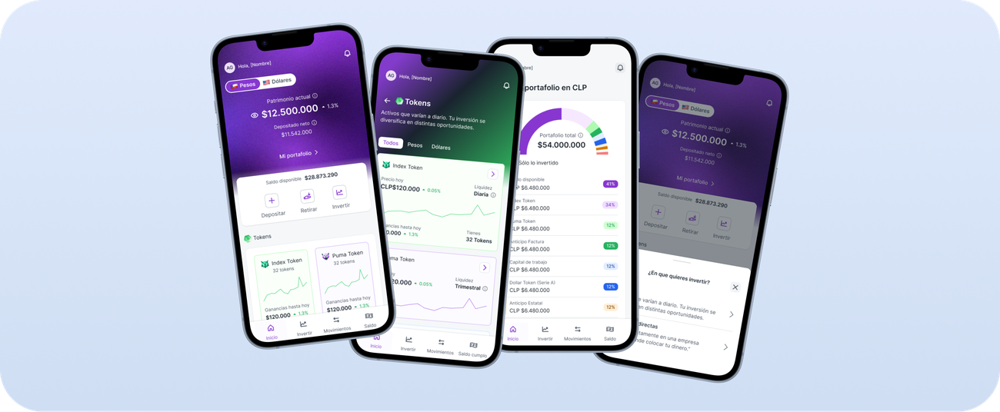
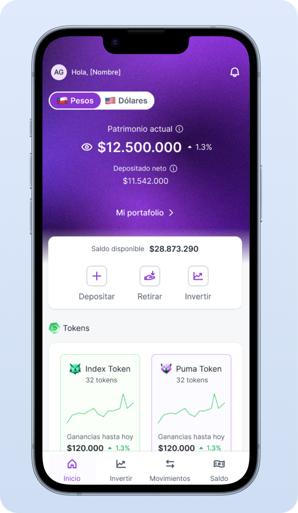
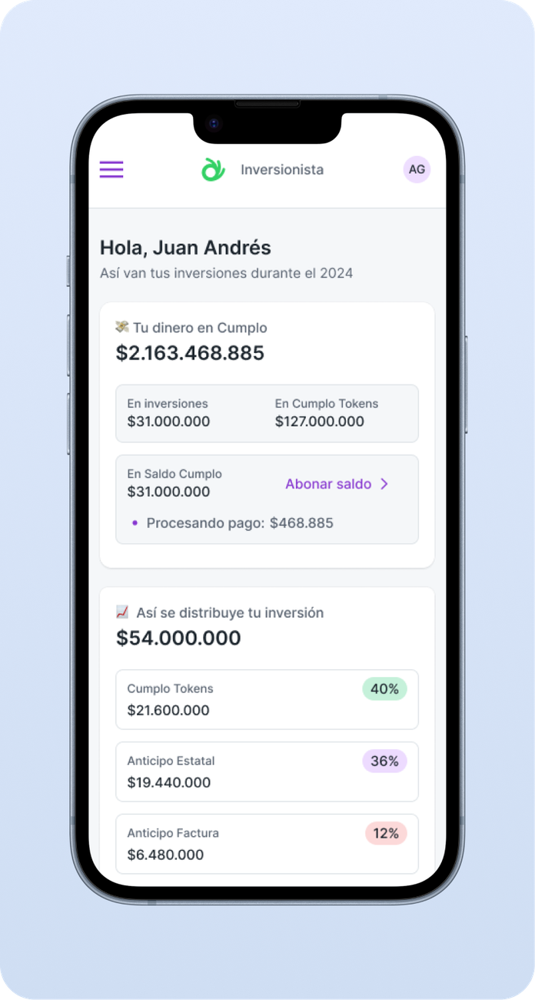

El dolor como punto de partida

Durante varias sesiones de entrevistas con inversionistas de Cumplo, hubo una frase que se repitió con distintas formas, pero con el mismo fondo:
🤷♂️ “No tengo idea si voy bien o mal con mi plata en Cumplo.”
Muchos usuarios compartieron que, al entrar a la plataforma, no sabían con claridad cuál era su situación financiera. Algunos buscaban cómo abonar o invertir, otros querían entender si sus inversiones estaban generando intereses o si les faltaba diversificación. Pero todos coincidían en algo: el sitio no les daba una visión clara, rápida y útil de su estado financiero.
Entraban y se encontraban con múltiples secciones, menús y datos dispersos. No había un lugar que los orientara ni les dijera “esto es lo importante ahora”. Y eso generaba inseguridad, frustración y, a veces, decisiones mal informadas.

Evolución del diseño: de la confusión a la claridad
En la primera versión de esta vista cometimos un error importante: la forma en que mostrábamos las ganancias era incorrecta. Y no se trataba solo de un tema visual, sino funcional y estratégico. Mostrábamos resultados en función del horizonte temporal, lo que no representaba fielmente el modelo de negocio ni la experiencia real de los inversionistas.
Después de varias iteraciones con usuarios y stakeholders entendimos que lo correcto no era hablar de “ganancias por periodo”, sino del porcentaje de crecimiento del patrimonio total del inversionista, considerando sus inversiones iniciales, las reinversiones y los tokens.
Ese giro conceptual fue clave: en vez de confundir con métricas fragmentadas, dimos una visión más global y alineada con lo que realmente importa al usuario: cómo crece su patrimonio en Cumplo a lo largo del tiempo.
El desafío
¿Cómo mostrar lo esencial sin abrumar?
Teníamos que diseñar una pantalla que entregara seguridad y claridad en pocos segundos. Una especie de “home financiero” que resumiera lo importante y ofreciera caminos claros para actuar.

Proceso de diseño y planificación
Aterrizamos el objetivo: que esta vista fuera el nuevo punto de partida de los inversionistas, con foco en comprensión rápida y acción.
Los contenidos clave definidos fueron:
- Patrimonio total del usuario.
- Rentabilidad acumulada desde que inició en Cumplo.
- Tokens activos y su aporte al patrimonio.
- Resumen de inversiones directas.
- Accesos directos al saldo, invertir y movimientos.
Con wireframes y prototipos de alta fidelidad trabajamos en jerarquía visual, claridad en redacciones y una estructura modular. Iteramos con feedback constante de inversionistas y stakeholders.
Testeo y validación
En pruebas de usabilidad confirmamos que:
- Los usuarios entendían la información sin leer en detalle.
- Localizaban con rapidez lo que necesitaban hacer.
La confianza y percepción de Cumplo como plataforma transparente aumentaba significativamente.
Conclusión
Este proyecto demostró que no siempre se trata de mostrar más información, sino de mostrar mejor información.
“Hola, así van tus inversiones” se transformó en un punto de partida claro, humano y accionable, ayudando a que cada inversionista entienda su situación en segundos y decida con confianza qué hacer con su dinero.